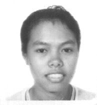

Vernacular Lexicon
A
B
BAP
BL
D
E
G
H
I
K
KI
L
LA
LIP
M
N
O
P
PA
R
S
SE
SIN
T
TE
TIN
U
V
W
Y
Z
Healthbooks
This booklet is one of a series designed to teach basic principles of health—particularly preventative health. The content has been especially designed to be relevant and helpful to the situation of those in remote villages.
The lessons are taught in the traditional way through stories, which are complemented with many illustrations. The larger text is Matigsalug, but English is also included to assist other health workers. A set of questions and answers follows each story to be used in self-study or by the facilitator in group sessions.
Ka migsulat kayi si Jason Gray, MPS (NZ).
Jason Gray is a pharmacist from New Zealand. He gained his practicing certificate in that country in 1990 after three years of study followed by a one year internship in a hospital pharmacy.
After qualifying, he practiced hospital pharmacy in the United Kingdom intermittently over a period of two years.
He returned to New Zealand and completed post-graduate studies in clinical pharmacy in 1997. He has experience in both community and hospital pharmacy.
Ka miggimu te litratu si Dra Gray, MBChB.
Catherine Gray is a medical doctor from New Zealand. She graduated in medicine in 1994 and spent some time as a medical student working in Pakistan. She completed her internship in 1995, her post-graduate Diploma in Pediatrics in 1996, and her Diploma in Obstetrics and Gynecology in 1997. Catherine first visited the Philippines in 1992.
In 1997, Jason and his wife Catherine spent six months working with the Summer Institute of Linguistics personnel on medical and related work here in Mindanao, culminating in the production of this series of health books.
Ka miggalin te Matigsalug puun te English si Rosalyn Uban.

Rosalyn Uban, a Matigsalug, is a student from Sinuda, Kitaotao, Bukidnon. She is currently studying education at Bukidnon State College in Malaybalay.
First published by Matigsalug Literacy Education Incorporated (MALEI), 1998.
This page last updated: 28-Dec-2019
Copyright © 2009-2010